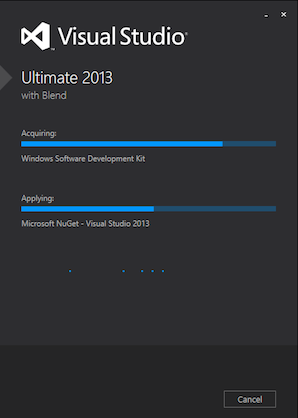
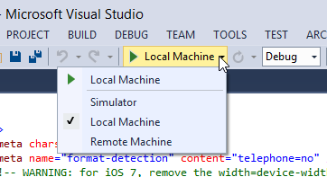
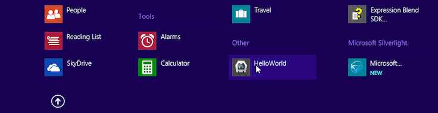
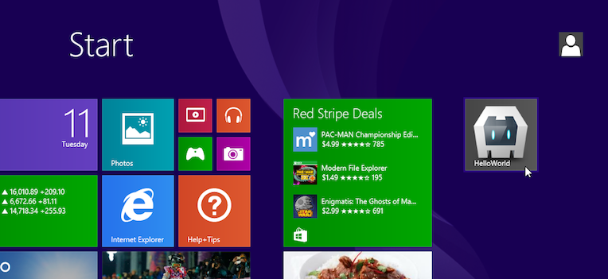
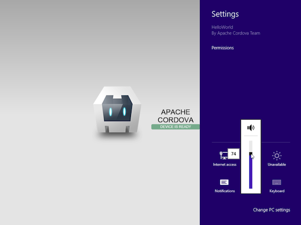

Windows 8 Platform Guide
Ce guide montre comment configurer votre environnement de développement SDK pour déployer Cordova apps dans Windows 8. Il montre comment utiliser deux outils shell spécifiques à Windows 8 pour générer et créer des applications, ou de multi-plateforme Cordova CLI discutés dans l'Interface de ligne de commande. (Reportez-vous à la présentation pour une comparaison de ces options de développement). Cette section montre également comment modifier Cordova apps dans Visual Studio. Peu importe l'approche que vous prenez, vous devez installer le kit SDK de Visual Studio, tel que décrit ci-dessous.
Voir la mise à niveau de Windows 8 pour plus d'informations sur comment mettre à niveau les projets existants de Windows 8 Cordova.
Cordova WebViews s'exécutant sur Windows 8 s'appuient sur Internet Explorer 10 dans leur moteur de rendu, donc en pratique vous pouvez utiliser le débogueur puissant de IE10 pour tester n'importe quel contenu web qui n'est pas invoquer Cordova APIs. Le Blog des développeurs Windows Phone fournit des indications utiles sur comment soutenir IE10 avec les navigateurs WebKit comparables.
Exigences et soutien
Vous avez besoin de ce qui suit :
Une version 64 bits de Windows 8 Pro, un disque d'installation ou un fichier d'image disque ISO . Une version d'évaluation est disponible sur le Microsoft Developer Network.
Visual Studio, les éditions 2013 soit l'ultime, Premiumou professionnel .
Pour développer des applications de Cordova pour Windows 8, vous pouvez utiliser un PC fonctionnant sous Windows, mais vous pouvez également développer sur un Mac, un environnement de machine virtuelle en cours d'exécution ou à l'aide de Boot Camp pour la partition de duel-initialisez un Windows 8. Consulter les ressources à mettre en place l'environnement de développement requis Windows sur un Mac :
À l'aide d'outils de Cordova Shell
Si vous souhaitez utiliser les outils de shell Windows 8-centrée de Cordova en conjonction avec le SDK, vous avez deux options de base :
Y accéder localement à partir de code de projet généré par la CLI. Ils sont disponibles dans le
platforms/windows8/cordovarépertoire après avoir ajouté lawindows8plateforme tel que décrit ci-dessous.Téléchargez-les sur une distribution séparée à cordova.apache.org. La distribution de Cordova contient des archives distincts pour chaque plate-forme. N'oubliez pas d'élargir l'archive appropriée,
cordova-windows8\windows8dans ce cas, dans un répertoire vide. Les utilitaires lot pertinents sont disponibles dans le niveau supérieurbinrépertoire. (Consultez le fichier README si nécessaire pour des directions plus détaillées).
Ces outils de coquille permettent de créer, construire et exécuter des applications Windows 8. Pour plus d'informations sur l'interface de ligne de commande supplémentaire qui active les fonctionnalités de plugin sur toutes les plateformes, voir Plugman à l'aide à gérer les Plugins.
Installer le SDK
Installer l'ultime, Premiumou Professional 2013 éditions de Visual Studio.

Créez un nouveau projet
À ce stade, pour créer un nouveau projet, vous pouvez choisir entre l'outil CLI multiplate-forme décrit dans l'Interface de ligne de commande, ou l'ensemble d'outils spécifiques 8 shell Windows. A partir d'un répertoire de code source, cette approche CLI génère une application nommée HelloWorld dans un nouveau hello Répertoire de projet :
> cordova create hello com.example.hello HelloWorld
> cd hello
> cordova platform add windows8
> cordova build
Voici l'approche de shell-outil de niveau inférieur correspondant :
C:\path\to\cordova-win8\bin\create.bat C:\path\to\new\hello com.example.hello HelloWorld
Générez le projet
Si vous utilisez l'interface CLI dans le développement, le niveau supérieur du répertoire du projet www répertoire contenant les fichiers sources. Exécutez un de ces dans le répertoire du projet pour reconstruire l'application :
> cordova build
> cordova build windows8 # do not rebuild other platforms
Si vous utilisez les outils de shell Windows Phone spécifiques au développement, il y a une approche différente. Une fois que vous générez le projet, source de l'application par défaut est disponible dans le projects\windows8\www sous-répertoire. Les commandes suivantes sont disponibles dans la cordova sous-répertoire au même niveau.
Le build commande nettoie les fichiers projet et régénère le $ $ etAPP. Le premier exemple génère des informations de débogage, et le second signe les apps pour diffusion immédiate :
C:\path\to\project\cordova\build.bat --debug
C:\path\to\project\cordova\build.bat --release
Le clean commande aide à débusquer les répertoires en préparation pour le prochain build :
C:\path\to\project\cordova\clean.bat
Ouvrez le projet dans le SDK et de déployer l'application
Une fois que vous générez une application Cordova comme décrit ci-dessus, vous pouvez l'ouvrir avec Visual Studio. Les différents build commandes génèrent un fichier de Visual Studio Solution (.sln). Ouvrez le fichier dans l'Explorateur de fichiers pour modifier le projet dans Visual Studio :

Le CordovaApp composant affiche au sein de la solution et ses www répertoire contient le code source sur le web, y compris la index.html page d'accueil :

Les commandes sous le menu principal de Visual Studio vous permettent de tester ou déployer l'application :

Avec l' Ordinateur Local est sélectionné, appuyez sur la flèche verte pour installer l'application sur le même ordinateur qui exécute Visual Studio. Une fois vous le faites, le $ $ etAPP apparaît dans des listes de Windows 8 app :

Chaque fois que vous reconstruisez l'application, la version disponible dans l'interface est régénérée.
Une fois disponibles dans les listes de l'app, maintenant la touche CTRL enfoncée tout en sélectionnant le app permet d'épingler dans l'écran principal :

Notez que si vous ouvrez l'application dans un environnement de machine virtuelle, vous devrez peut-être cliquer dans les coins ou sur les côtés des fenêtres pour basculer des applications ou accéder à des fonctionnalités supplémentaires :

Vous pouvez également choisir l'option déploiement sur simulateur pour visualiser l'application comme s'il s'exécutait sur un périphérique de tablette :

À la différence de déploiement de bureau, cette option vous permet de simuler l'orientation de la tablette, emplacement et de modifier ses paramètres réseau.
Remarque: consultez l'Aperçu pour obtenir des conseils sur la façon d'utiliser les outils de ligne de commande de Cordova ou le SDK dans votre flux de travail. La CLI Cordova s'appuie sur le code source de multi-plateforme qui remplace régulièrement les fichiers spécifiques à la plateforme utilisées par le SDK. Si vous souhaitez utiliser le SDK pour modifier le projet, utilisez les outils de la coquille de niveau inférieur comme alternative à la CLI.